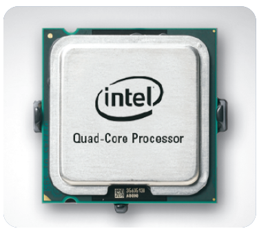

class: center, middle # IEMS 5703<br/>Network Programming and System Design ### Lecture 3 - Concurrent Programming #### Albert Au Yeung<br/>25th January, 2018 --- # Agenda - What is concurrent programming? - Python's characteristics - Multi-threading - Multi-processing - Message passing and shared memory - Application in socket programming --- class: center, middle # Concurrent Programming --- class: split # Concurrent Programming .column-left[ - Simple programs are usually **sequentially** executed - **Concurrent**: *Existing or occurring at the same period of time* - Why do we want to do things at the **same time**? 1. Our processor is very powerful (multi-core processors) 2. Some tasks would take a relative long time to finish: - Disk I/O - Network calls - User input ] .column-right[ <center>  </center> ] --- # Concurrent Programming ### Remember our TCP server program? ```python import socket server_socket = socket.socket(socket.AF_INET, socket.SOCK_STREAM) server_socket.bind((socket.gethostname(), 50001)) server_socket.listen(10) while True: (client_socket, address) = server_socket.accept() data = client_socket.recv(1024) client_socket.sendall(data) client_socket.close() ``` - It can only serve **one client** at a time - What if serving a client takes a long time? --- # Concurrent Programming - Concurrency can be achieved by several means: * Multi-threading * Multi-processing * Asynchronous / Event driven approach - We will focus on the first two in this lecture --- # Processes and Threads --- # Processes and Threads --- # Processes and Threads --- topics - thread vs. processes So Python is not truly multithreaded. But what is a thread? Let's take a step back and look at things in perspective. A process is a basic operating system abstraction. It is a program that is in execution—in other words, code that is running. Multiple processes are always running in a computer, and they are executing in parallel. A process can have multiple threads. They execute the same code belonging to the parent process. Ideally, they run in parallel, but not necessarily. The reason why processes aren't enough is because applications need to be responsive and listen for user actions while updating the display and saving a file. If that's still a bit unclear, here's a cheatsheet: PROCESSES THREADS Processes don't share memory Threads share memory Spawning/switching processes is expensive Spawning/switching threads is less expensive Processes require more resources Threads require fewer resources (are sometimes called lightweight processes) No memory synchronisation needed You need to use synchronisation mechanisms to be sure you're correctly handling the data There isn’t one recipe that accommodates everything. Choosing one is greatly dependent on the context and the task you are trying to achieve. --- - global interpreter lock (GIL) The Global Interpreter Lock (GIL) is one of the most controversial subjects in the Python world. In CPython, the most popular implementation of Python, the GIL is a mutex that makes things thread-safe. The GIL makes it easy to integrate with external libraries that are not thread-safe, and it makes non-parallel code faster. This comes at a cost, though. Due to the GIL, we can't achieve true parallelism via multithreading. Basically, two different native threads of the same process can't run Python code at once. Things are not that bad, though, and here's why: stuff that happens outside the GIL realm is free to be parallel. In this category fall long-running tasks like I/O and, fortunately, libraries like numpy. Due to a global interpreter lock (GIL), Python threads are restricted to an execution model that only allows one thread to execute in the interpreter at any given time. For this reason, Python threads should generally not be used for computationally intensive tasks where you are trying to achieve parallelism on multiple CPUs. They are much better suited for I/O handling and handling concurrent execution in code that performs blocking operations (e.g., waiting for I/O, waiting for results from a database, etc.). --- parallel vs. concurrent ref: https://code.tutsplus.com/articles/introduction-to-parallel-and-concurrent-programming-in-python--cms-28612 --- The Python Parallel/Concurrent Programming Ecosystem Python has rich APIs for doing parallel/concurrent programming. In this tutorial we're covering the most popular ones, but you have to know that for any need you have in this domain, there's probably something already out there that can help you achieve your goal. In the next section, we'll build a practical application in many forms, using all of the libraries presented. Without further ado, here are the modules/libraries we're going to cover: threading: The standard way of working with threads in Python. It is a higher-level API wrapper over the functionality exposed by the _thread module, which is a low-level interface over the operating system's thread implementation. concurrent.futures: A module part of the standard library that provides an even higher-level abstraction layer over threads. The threads are modelled as asynchronous tasks. multiprocessing: Similar to the threading module, offering a very similar interface but using processes instead of threads. gevent and greenlets: Greenlets, also called micro-threads, are units of execution that can be scheduled collaboratively and can perform tasks concurrently without much overhead. celery: A high-level distributed task queue. The tasks are queued and executed concurrently using various paradigms like multiprocessing or gevent. Concurrency ------------ (Ref: https://www.slideshare.net/TausunAkhtary/concurrent-parallel-programming) (Ref: https://www.slideshare.net/pvergain/multiprocessing-with-python-presentation) Running more than one tasks at the same time * In a time-shared manner on a single CPU core * In a truly parallel manner on a multi-core CPU Concurrency vs. Parallelism Concurrency: two or more calculations happen within the same time frame, and there is usually some sort of dependency between them (example: two queues with only one coffee machine) Parallelism: two or more calculations happen simultaneously (example: two queues on two coffee machines) Level of Concurrency: * process-based (multiple programs (processes) running concurrently) * thread-based (parts of the same process running concurrently) Challenges in Concurency ------------------------ * Shared resources * Race condition * Critical section * Deadlock * Starvation * ... Thread ------ Show thread life cycle diagram Examples: https://www.oreilly.com/learning/python-cookbook-concurrency Communicating Between Threads Problem You have multiple threads in your program and you want to safely communicate or exchange data between them. Solution Perhaps the safest way to send data from one thread to another is to use a Queue from the queue library. To do this, you create a Queue instance that is shared by the threads. Threads then use put() or get() operations to add or remove items from the queue. For example: https://www.oreilly.com/learning/python-cookbook-concurrency --- Code samples: http://www.dabeaz.com/usenix2009/concurrent/ Dining Philosophers Problem --------------------------- [Dining Philosophers Problem - Wikipedia](https://en.wikipedia.org/wiki/Dining_philosophers_problem) Five silent philosophers sit at a round table with bowls of spaghetti. Forks are placed between each pair of adjacent philosophers. Each philosopher must alternately think and eat. However, a philosopher can only eat spaghetti when they have both left and right forks. Each fork can be held by only one philosopher and so a philosopher can use the fork only if it is not being used by another philosopher. After an individual philosopher finishes eating, they need to put down both forks so that the forks become available to others. A philosopher can take the fork on their right or the one on their left as they become available, but cannot start eating before getting both forks. Eating is not limited by the remaining amounts of spaghetti or stomach space; an infinite supply and an infinite demand are assumed. The problem is how to design a discipline of behavior (a concurrent algorithm) such that no philosopher will starve; i.e., each can forever continue to alternate between eating and thinking, assuming that no philosopher can know when others may want to eat or think. Concurrency in Python --------------------- https://wiki.python.org/moin/GlobalInterpreterLock Does it mean that we cannot benefit from multi-threading in Python? (consider applications with heavy I/O operations) the `select()` function ref: https://pymotw.com/2/select/ --- class: center, middle # Logging in Python --- # Logging in Your Program --- # Why not `print`? --- # The `logging` module --- # Loggers and Handlers --- # Logging Level --- # Formatting --- # Hierarchical Logging --- # More Examples --- class: center, middle # End of Lecture 3